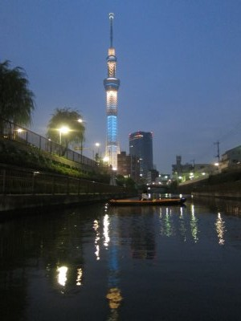
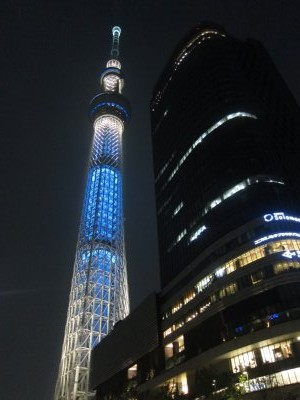
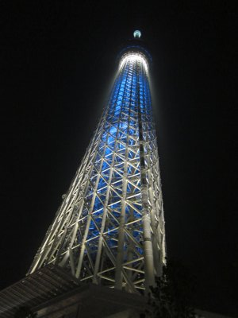

スカイツリーナイトカヤック | 2013年7月 |
|---|---|
| 東京の新名所と言えばスカイツリーですね。そのスカイツリーをカヤックで川から眺める、しかも夜に。って事をmaruさんに誘われてやってきました。 なんせ夜のツアーなので、静岡出発は午後。待ち合わせの新東名清水サービスエリアから一路東京へ。 東京まではスムーズだったけど、東京料金所を越えて、首都高に入ったら渋滞。たった数キロに2時間くらい掛かりました。 スカイツリー周辺には、車を停めてカヤックを組み立てる場所も無いので、ちょっと離れた荒川の直ぐ隣を流れる旧中川にまたがるようにある大島小松川公園に車を停めて出艇です。 | |
 出発地からのスカイツリー 遠いね |  天気ちょっと悪いね |
| 時間は午後6時。暗くなる手前ですが、本日はちょっと曇り空。何て言っていたらちょっと雨がぱらつきました。 川の流れは、どっちに流れているのか分からないくらいにゆったりですが、その代わりちょっと汚い。 旧中川を北上し、途中から北十間川に入ります。この川は隅田川に繋がっているようですが、カヤックではいけません。 北十間川は川幅も細く、まさに住宅街の中にある水路ってイメージでしょうか。 | |
 徐々にスカイツリーが近づいてきた |  ツリーと水面とカヌー |
| 漕いでいくウチに、段々とスカイツリーが大きくなってきます。まだライトアップしてません。 7時30分前、もうすぐツリーって時にライトアップ。おお〜、曇っているけど、意外に綺麗に見える。 ツリー根本まで来ると、人で賑わっていました。通行人が声を掛けてくれます。 さすがにデカイは、スカイツリー。真下からだと、展望台が邪魔で天辺が見えません。 迫力有りますね。これは根本まで来た甲斐があります。 | |
 水面に反射しているツリー |  根本まで見えてきました |
| ひとしきり写真を撮って引き返します。帰りは途中振り返りながら、名残惜しく漕いでました。 行きは楽しくて良いけど、帰りの行程は漕ぐだけという、ちょっと悲しいですね。しかも暗いし。しかもボラが跳ねまくって艇の中に飛び込んでくるし。 帰りの首都高・東名はスムーズに帰れました。家に着くのは翌日の1時。 強行軍のツアーだけど、川面から眺めるスカイツリーは、ちょっと格別です。水面に反射するツリーが良いんでしょうね。段々近づいてくるのも良いし。 また行ってみたい！ | |
|  ほぼ真下 |  完全真下 |
 名残惜しく帰り道に振り返る |  水面からの東京夜景 |
| 写真＆コメント ｂｙ べっしー | |